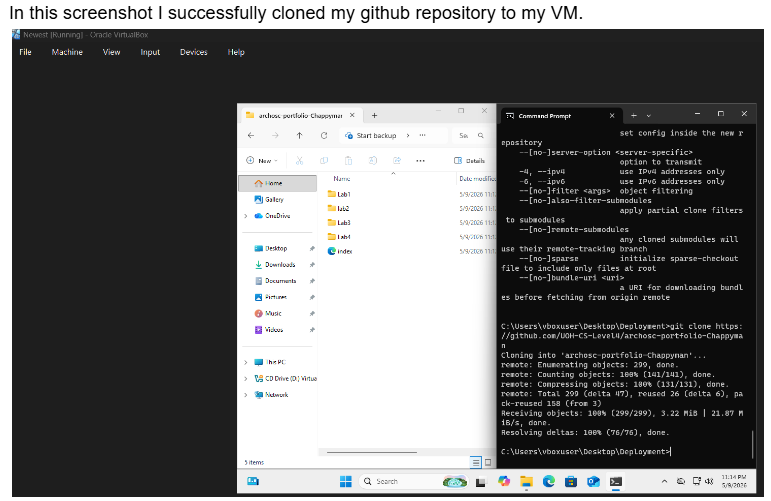
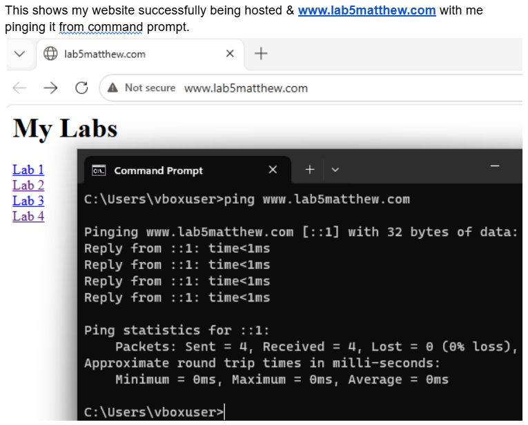
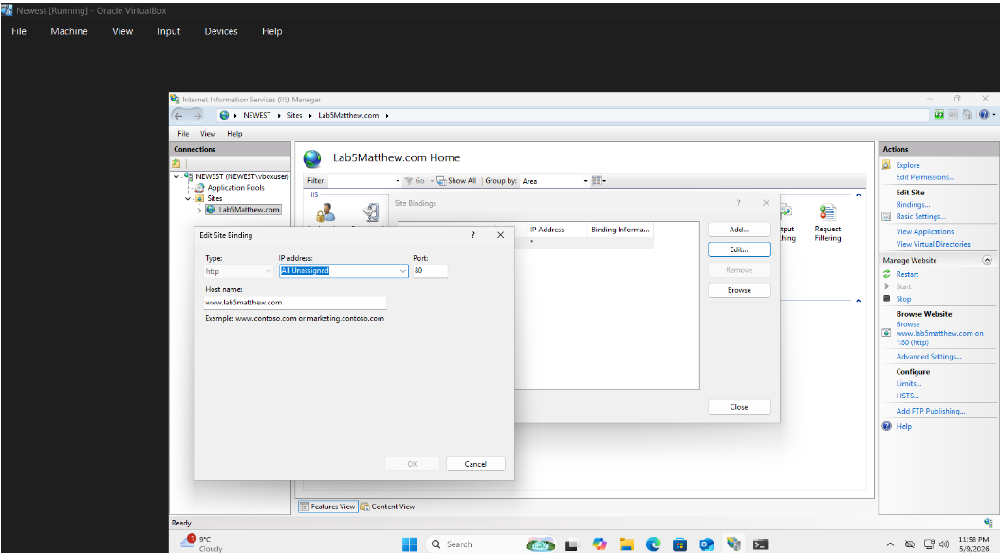
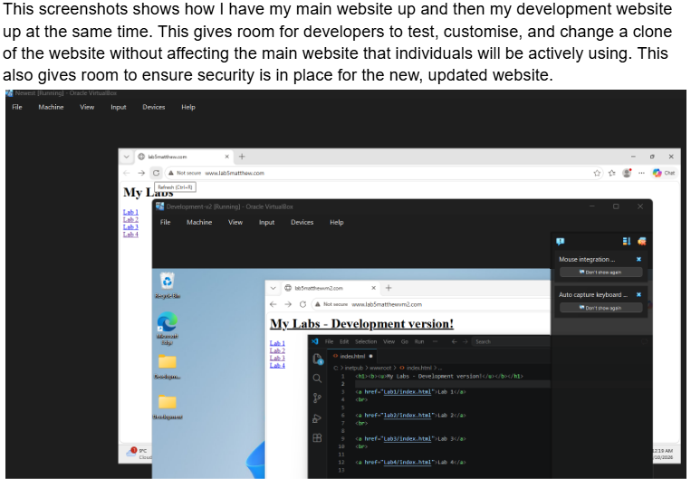

This portfolio contains screenshots and definitions for all of the tasks I have completed in my lab.
This lab (lab 5) focused on using virtual machines to host and develop a portfolio website. Remote Desktop Connection was used to access Windows Server virtual machines, Git was installed and used to clone the portfolio repository, and IIS web server software was used to host the website from the VM. Separate deployment and development VMs were then created to allow changes to be tested safely before being deployed. Visual Studio Code was installed on the development VM to edit the website directly, helping demonstrate the difference between a live deployment server and a development environment.



